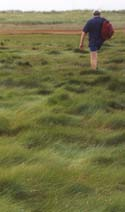

Walking Walking
Throughout the Cape are many well-maintained trails that are scenic,
interesting, and easy to walk. (This walker unfortunately left those
trails.) The Cape benefits from the efforts of many conservation
efforts at the federal, state and local levels as well as private
organizations. The crowds don't throng to walking trails; often
you can feel you're out in the wilderness alone.
Short
Nature Walks by Hugh and Heather Sadlier, published by the
Globe Pequot Press describes 21 nature walks on the Cape mainland.
It has maps and it's small enough to carry around.
The Cape Cod Trails Conference features detailed descriptions and
maps for Long Nature Walks
of up to ten miles. They explore many territories that one might
not venture into without this guide. The site includes pointers
to other walks, bicycle rides, and other activities.
Many conservation areas are relatively unknown and undocumented,
like Pah Wah Point and the new Kent Point lands in Orleans. Cape
Cod Pathways lists many local conservation lands by town and
scheduled walks.
Having a knowledgeable guide often makes a walk more interesting.
Some guided walks take you to places that would be off-limits or
difficult to find otherwise. The
National Seashore leads guided
walks at the two Visitor Centers and other locations. Wellfleet
Wildlife Sanctuary and Cape Cod
Museum of Natural History both lead guided walks at their centers.
Descriptions of the trails can also be found at the web sites of
these organizations.
|